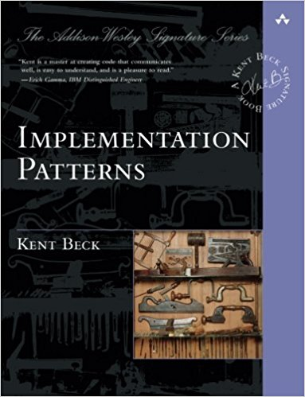
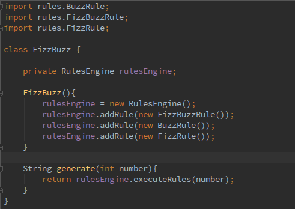

Values and principles
in software design.


Fran Reyes -

fran_reyes
Values, principles and patterns form a balanced expression of a style of development.
Differents values and differents principles will lead to different styles.
“Any fool can write code that a computer can understand. Good programmers write code that humans can understand.”
San Martin de Fowler
- Patterns describe what to do.
- Values provide motivation.
- Principles help translate motive into action.
Principles bridge values (universal but often difficult to apply directly) and patterns (which are clear to apply but specific).
Communication, Simplicity and Flexibility
Software Economics
Communication
Code communicates well when a reader can understand it, modify it, or use it.
What is the purpose of this code?
public List<int> getThem(){
var list1 = new List<int>();
forEach(var x : TheList){
if(x.Status == 4) {
list1.add(x.Id);
}
}
return list1;
}
What kinds of things are in the List?
public List<int> getThem(){
var list1 = new List<int>();
forEach(var stockVehicle : StockVehicles){
if(stockVehicle.Status == 4) {
list1.add(stockVehicle.Id);
}
}
return list1;
}
What is the significance of the value 4?
public List<int> getThem(){
var list1 = new List<int>();
forEach(var stockVehicle : StockVehicles){
if(stockVehicle.Status == Blocked) {
list1.add(stockVehicle.Id);
}
}
return list1;
}
How would I use the list being returned?
public List<int> getThem(){
var blockedVehicleIds = new List<int>();
forEach(var stockVehicle : StockVehicles){
if(stockVehicle.Status == Blocked) {
blockedVehicleIds.add(stockVehicle.Id);
}
}
return blockedVehicleIds;
}
What paradigm am I working on?
public List<int> getThem(){
var blockedVehicleIds = new List<int>();
forEach(var stockVehicle : StockVehicles){
if(stockVehicle.isBlocked()) {
blockedVehicleIds.add(stockVehicle.Id);
}
}
return blockedVehicleIds;
}
Could be this code close to that ordinary written prose?
public List<int> getThem(){
StockVehicles
.Where(vehicle => vehicle.isBlocked())
.Select(vehicle => vehicle.Id)
.ToList();
}
Simplicity
Eliminating excess complexity enables those reading, using, and modifiying programs to understand them more quickly.
Essential vs accidental complexity
Simplicity
Sometimes, however, I find a simplication that would make a program harder to understand. I choose communication over simplicity in these cases.
Why the expected result is 49.25?
bank.addRate("USD", "GBP", rate);
bank.commission(commission);
Money result = bank.convert(new Note(100, "USD"), "GBP");
assertEquals(new Note(49.25, "GBP"), result);
Be explicit, although a bit of coupling maybe is the comparative cost
bank.addRate("USD", "GBP", rate);
bank.commission(commission);
Money result = bank.convert(new Note(100, "USD"), "GBP");
assertEquals(new Note(100 / rate
* (1 - commission, "GBP"), result);
Turning it into a property based test, increase the benefits
forAll(doublesGreaterThan(0)) { rate ->
forAll(doublesGreaterThan(0)) { commission ->
bank.addRate(USD, GBP, rate);
bank.commission(commission);
assertThat(bank.convert(Note(100, USD), GBP),
equalTo(Note(100 / rate * (1 - commission), GBP)))
}
}
Simplicity
Simplicity is in the eye of the beholder. What is simple to an expert programmer, familiar with the power tools of the craft, might be overwhelmingly complex to a beginner.
Flexibility
Design for the future. Change is expensive. Make it cheap by anticipating it.


Flexibility
Flexibility is the justification used for the most ineffective coding and design practices.
Flexibility can come at the cost of increased complexity.
Flexibility

Flexibility
“That's why flexibility of simplicity and extensive tests is more effective that the flexibility offered by speculated design.”
Flexibility
“Paradox, by not considering the future of your code you make your code much more likely to be adaptable in the future”
Principles
- Local consequences
- Minimize Repetition
- Logic and Data Together
- Declarative Expression
- Symmetry
- Rate of Change
Local consequences
If a change here can cause a problem there, then the cost of change rise dramatically
Code with mostly local consequences communicates effectively. It can be understood gradually without first having assemble an understanding of whole
Example: change variable name of Enum in BZ has impact in front end
Minimize Repetition
When you have the same code in several places, if you change one copy of the code you have to decide whether or not to change all the other copies
Logic and Data Together
Put logic and data it operates on near each other
Declarative Expression
Express the logic describing the What you want to do and not How you want to do.
Imperative expression
List<int> results = new List<int>();
foreach(var num in collection)
{
if (num % 2 != 0)
results.Add(num);
}
Declarative expression
var results = collection.Where( num => num % 2 != 0);
Symmetry
Symmetry in code is where the same idea is expressed the same way everywhere it appears in the code.
Once readers understand one half of the simmetry, they can quickly understand the other half.
offer.assignCustomer(customer);
offer.status = Offer.Accepted;
offer.changeLastModifiedDate();
offer.assignCustomer(customer);
offer.accept();
offer.changeLastModifiedDate();
offer.assignCustomer(customer);
offer.accept();
Rate of change
Put logic or data that changes at the same rate together and separate logic or data that changes at different rates
Change together
public void setAmount(int value, string currency){
this.value = value;
this.currency = currency;
}
Becomes
public void setAmount(Money value){
this.value = value;
}
Remember!
“Programming, then, is a human task done by humans for humans.”
Kent Beck
Related links
Simple Made Easy - Rich Hickey
Economía del software en 10 min - Artola & Guillermo
Communication over simpliflication example (Property based testing contribution by Nat Pryce)
Simplicidad para desarrolladores - Eduardo Ferro
Chunking – or the myth of declarative - Dan North
An example of introducing symmetry to enable duplication removal - Manuel Rivero